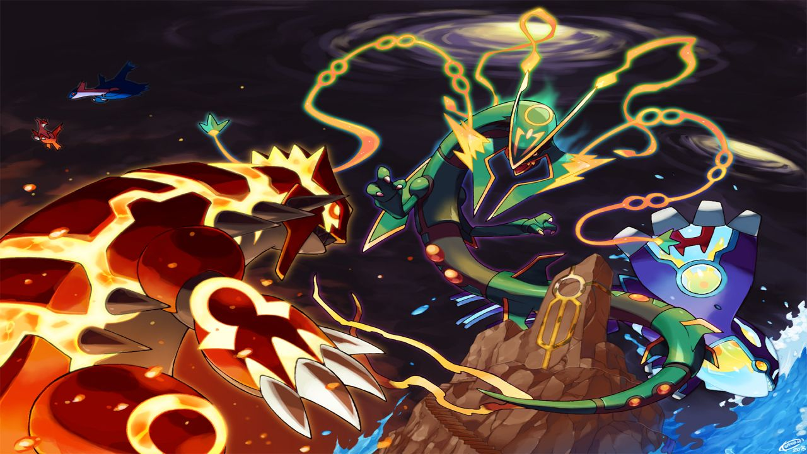

ACTUALIDAD
- Tiempo inconcreto antes de la primera/tercera generación. Acontecimientos de Pokémon Mundo Misterioso: Equipo de rescate Rojo y Equipo de rescate Azul, Pokémon Mundo Misterioso: Exploradores del Tiempo y Exploradores de la Oscuridad y Pokémon Mundo Misterioso: Exploradores del Cielo.
Un meteorito con un virus entra en contacto con la atmósfera, el virus se muta y nace Deoxys. Rayquaza cree que está invadiendo su terreno y decide destruir el meteorito. Fragmentos de éste se esparcen y crean la Cascada Meteoro.
Un Pokémon llamado Grovyle roba los Engranajes del Tiempo, los Pokémon lo malinterpretan y lo toman como un ladrón destructivo. Más tarde se descubre que el malvado era Dusknoir y que Grovyle quería proteger el tiempo entregando los Engranajes a Dialga.
Años antes de la primera generación.
En la mansión Pokémon, en Isla Canela, Mewtwo se reproduce de Mew y escapa, destruyendo la mansión.
Una nueva guerra asola Kanto. Lt. Surge combate en ella y es salvado de morir por la valentía de sus pokémon eléctricos.
Porygon es creado.
Un poco antes de lo sucedido en la Primera generación/Tercera generación: Los acontecimientos de Pokémon Colosseum.
Leo escapa del Equipo Cepo, roba el Poké Cepo y rescata a Sandra.
Primera/Tercera generación: Los acontecimientos de Pokémon Rojo, Azul, Amarillo, Rojo Fuego, Verde Hoja, Rubí, Zafiro, Esmeralda y Pokémon Ranger.
Rojo/Hoja sale de Pueblo Paleta en su viaje Pokémon después de su rival, Azul. Mientras consigue las ocho medallas de Kanto, también lucha contra el Team Rocket. Él/Ella lucha contra el Alto Mando y contra su campeón, que no es otro que Azul. Cuando Rojo/Hoja se convierte en campeón/a se marcha al Archi7 para terminar de derrotar al Team Rocket y ayudar a Celio a conectar la máquina de redes con Hoenn. A veces, Rojo sube al Monte Plateado para entrenar. Como Giovanni se ha ido, Azul, desanimado porque su rival le ha derrotado, se convierte en el líder del gimnasio de Ciudad Verde. El campeón ahora es Lance.
Bruno/Aura sale de Villa Raíz en un viaje Pokémon poco después de trasladarse a Hoenn desde Johto, después de salvar al Profesor Abedul. Poco después conoce a Blasco, de quien se hace rival. Después de derrotar a los ocho líderes de gimnasio y de calmar a Kyogre y a Groudon, Bruno/Aura gana al Alto Mando y se convierte en campeón. Luego viaja en barco al Frente Batalla y consigue los símbolos de los Ases del Frente.
Selena y Helio empiezan como Pokémon Ranger en la región de Floresta, y deben enfrentarse al Equipo Go-Rock, una organización con fines malvados liderada por los Hermanos Go-Rock que explota a los Pokémon.
Entre la primera y tercera generación y la segunda y cuarta generación.
Erupción del volcán en Isla Canela, que causa la destrucción de la isla.
Koga se convierte en un miembro del Alto Mando de Kanto, y su hija Sachiko se convierte en la líder de gimnasio de Ciudad Fucsia.
Lorelei deja el Alto Mando y vuelve a su hogar, en Isla Quarta.
Agatha deja el Alto Mando y desaparece misteriosamente.
Mento y Karen se convierten en miembros del Alto Mando.
La Zona Safari es reconstruida y ahora se convierte en el Parque Compi de Kanto.
El Museo de la Ciencia de Ciudad Plateada revive fósiles.
Giovanni abandona el Team Rocket y se retira a vivir en soledad en una cueva.
Finales de la Tercera generación-Principios de la Cuarta generación.
Mauro viaja por Aura y pide ayuda al Equipo Cepo para poder derrotar a Cífer, el cual ahora está bajo el mando del Maestro Avavil.
Tres años después que en la primera y tercera generación. Acontecimientos de Pokémon Oro, Plata, Cristal, Diamante y Perla, Pokémon Platino y Pokémon Ranger: Sombras de Almia.
Eco/Cris/Lira sale de Pueblo Primavera por un encargo del Profesor Elm. El profesor le da un Pokémon para que pueda viajar por Johto. Mientras tanto, Plata roba un Pokémon del Profesor Elm y desafía a Oro/Cristal/Lira por todo Johto. Mientras tanto, un Team Rocket revivido, usando planos hechos tres años antes, quiere capturar a un Gyarados rojo y también intentan contactar con Giovanni. Mientras tanto, Oro/Cristal consiguen las ocho medallas y entran a Kanto para derrotar al Alto Mando. Cuando lo derrota, va por Kanto, consiguiendo las ocho medallas de esa región. Al tener las dieciséis medallas, el profesor Oak le deja ir al Monte Plateado, allí se encuentra con Rojo y lo vence.
León/Maya e Israel viven en Pueblo Hojaverde y ven un reportaje sobre un Gyarados rojo que dicen que está en alguno de los lagos de Sinnoh. En el lago, les atacan una bandada de Starly y se ven obligados a coger uno de los Pokémon del Profesor Serbal para defenderse. Con esos Pokémon inician su viaje. Mientras consiguen las ocho medallas de Sinnoh, luchan con el Equipo Galaxia. Su líder, Helio quiere crear un universo donde él sea el Dios, y para eso, necesita controlar a Palkia y Dialga. Cuando gana al equipo y calma a Palkia/Dialga, León/Maya lucha contra el Alto Mando y su campeona: Cintia y se convierte en campeón/a. Viaja al Frente Batalla y vence finalmente al Equipo Galaxia.
Ritmi, Silvio y Primo/Caty entran en la Escuela Ranger de la región Almia, donde posteriormente Silvio y Primo/Caty se convierten en Rangers a excepción de Ritmi que llega a ser operadora. Acaban ingresando en la Unión Ranger donde investigan al Equipo Pocalux y posteriormente descubren su implicación con el actual presidente de Altru S.A. Bruno Haz, desbaratando sus planes de convertir la Torre Altru en un inmenso Gigaremo donde puede controlar a todos los Pokémon de Almia. Los Hermanos Go-Rock han dejado de ser criminales y han formado una banda de música propia que triunfa en la región de Almia.
Pocos años entre la cuarta y la quinta generación.
Catleya consigue un puesto en el Alto Mando de Teselia, sin dejar atrás el de As del Frente de Sinnoh y Johto.
Unos científicos del Equipo Plasma encuentran un Genesect, le muestran a N un plan para mejorarlo, pero éste lo rechaza. Un científico decide mejorarlo por su cuenta en el Laboratorio P+P, y consigue mejorar su cañón e instalarle un lector de ROM.
Acontecimientos de Pokémon Negro y Blanco y Pokémon Ranger: Trazos de Luz.
Liza/Lucho, Cheren y Bel salen de Pueblo Arcilla, después de recibir sus Pokémon iniciales de manos de la Profesora Encina. Mientras van recolectando las 8 medallas de la región Teselia, Liza/Lucho junto con Reshiram/Zekrom derrota al Equipo Plasma y a sus líderes Ghechis, y N acompañado de Zekrom/Reshiram quienes desaparecen luego de ser derrotados. Después Liza/Lucho derrota al Alto Mando de Teselia y a su campeón Mirto, convirtiéndose en campeona/campeón.
Verán y Brisa viajan a la región de Oblivia para frenar a los Nappers y a la Societé.
Los Hermanos Go-Rock siguen cosechando éxito. En uno de sus conciertos, coinciden con Verán/Brisa en Oblivia.
Dos años después de los acontecimientos de Pokémon Negro y Blanco. Acontecimientos de Pokémon Negro 2 y Blanco 2 y Pokémon X y Pokémon Y.
Rizzo/Nanci y Matís consiguen su primer Pokémon de manos de Bel en Ciudad Engobe e inician su viaje por Teselia. La Liga Teselia ha cambiado: Millo, Zeo, Maíz, Aloe, Junco e Iris ya no son líderes de gimnasio y un viejo personaje, Cheren, junto a Hiedra y Ciprián toman el cargo de Líder, entregando éstos últimos nuevas medallas que no se habían visto en otras Ciudades de la región. Mientras van desafiando a los 8 líderes de gimnasio, se cruzan con un nuevo enemigo, Acromo, quien trabaja para el Equipo Plasma Negro cuyo líder es Ghechis, mientras el Equipo Plasma Blanco intenta detenerlo junto a N. Ya conseguidas las 8 medallas, Rizzo/Nanci encuentran a N con Reshiram/Zekrom y a Ghechis con Kyurem en el Boquete Gigante, donde Ghechis fusiona a los dos Pokémon y es cuando Rizzo/Nanci derrotan a Kyurem Blanco/Negro y a Ghechis y el Equipo Plasma Negro desaparece. Finalmente Rizzo/Nanci desafía al Alto Mando y a su nueva campeona Iris, venciendo y convirtiéndose en campeón/campeona. Luego acepta el desafío de N, quien le entrega el orbe Orbe claro/oscuro, para poder invocar a Reshiram/Zekrom, una vez capturado Rizzo/Nanci enfrenta el reto final al regresar por Kyurem y así poder capturarlo.
Kalm, Serena y Xana consiguen su primer Pokémon de manos de Benigno en Pueblo Acuarela e inician su viaje por Kalos. Mientras van desafiando a los líderes de gimnasio, se cruzan con un nuevo enemigo, el Team Flare cuyo líder es Lysson, quien se busca despertar a los 2 Pokémon legendarios de Kalos, Xerneas e Yveltal. Ya conseguidas 7 medallas, Kalm, Serena y Xana encuentran al Team Flare con Xerneas/Yveltal , donde Lysson activa el arma definitiva, un arma que podría destruir el mundo entero, Kalm/Serena derrota a Xerneas/Yveltal y a Lysson, y el Team Flare desaparece. Finalmente Kalm/Serena desafía al Alto Mando y a su campeona Dianta, venciendo y convirtiéndose en campeón/campeona. Luego Kalm y Serena se van a Ciudad Batik para entrar en la Mansión Batalla, mientras que Xana se va de regreso a Pueblo Boceto, Trovato se va a Pueblo Crómlech y Benigno a Ciudad Témpera.
Entre la sexta y Séptima generación.
Sina y Dexio viajan a la región de Alola para investigar acerca de Zygarde, el Pokémon protector de Kalos.
Giovanni del Team Rocket viaja por el Ultraespacio reclutando a los líderes de los equipos villanos (Magma/Aqua/Galaxia/Plasma/Flare) de universos en donde no existe el/la protagonista y los villanos lograron sus objetivos y con ellos crea el Team Rainbow Rocket.
Dos años antes de los acontecimientos de Pokémon Sol y Luna.
Gladio roba uno de los tres Código Cero y con este escapa del Paraíso Æther .
Tres meses antes de los acontecimientos de Pokémon Sol y Luna.
Lylia escapa del Paraíso Æther junto con Cosmog.
Acontecimientos de Pokémon Sol y Luna.
El/la protagonista de Pokémon Sol/Luna se muda a Alola desde Kanto. Allí, el Profesor Kukui le otorga un pokémon. Junto con Tilo y Lylia comienza el recorrido insular para convertirse en una/un gran entrenadora/entrenador. En el transcurso de la aventura, han de hacer frente al Team Skull y a la fundación Æther, dirigida por Samina, quien quiere obtener el poder de los Ultraentes. Es derrotada por el/la heroína/héroe de Alola, quien después de eso, es elegida/o por Solgaleo/Lunala para ser su portador/a. Finalmente, el Profesor Kukui reúne a los entrenadores más poderosos de Alola para crear su primera Liga Pokémon, y el/la Protagonista de Pokémon Sol y Pokémon Luna acaba alzándose como primer campeón regional.
Acontecimientos de Pokémon UltraSol y UltraLuna
Giovanni viaja hacia Alola con el Team Rainbow Rocket tomando por la fuerza a la Fundación Æther.
 |
|